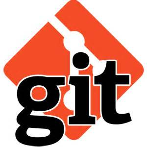
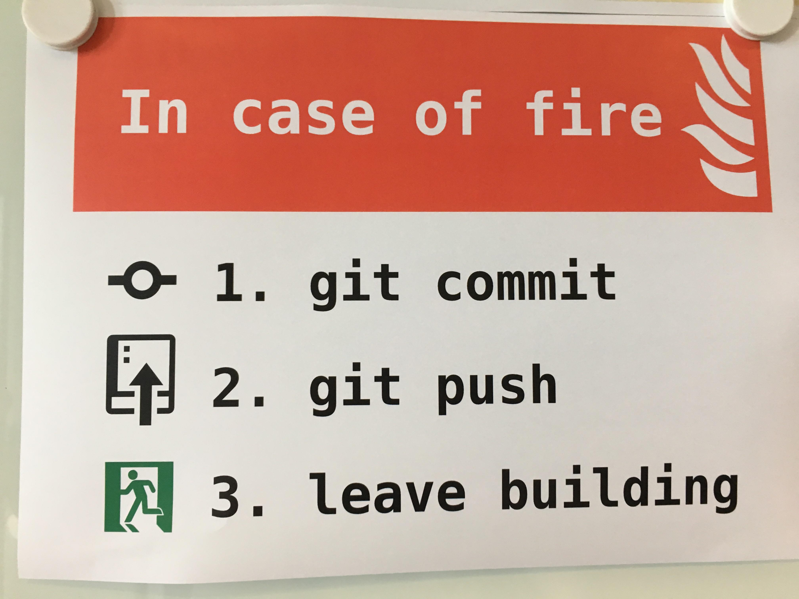

Version Control with Git
Reindert-Jan Ekker
Code Sensei
Intro: Git
Git is software for tracking changes in any set of files, usually used for coordinating work among programmers collaboratively developing source code during software development.
Why
- Safe storage
- Collaboration
- History
Never lose your work again
An example: AngularJS
Git

- Linus Torvalds in 2005
- Linux Kernel Source Code
- Distributed and very advanced
- De-facto standard
Part 1
Working locally
Hands-on intro
Let's create a small project
- Create a repository
- Explore the repo
- Create some files
- Commit a version
- Create some other files
- Commit another version
- Log, checkout
The basic flow

Four concepts
- Repo
- Working Directory
- HEAD
- Index or "staging area"
Working Directory
This is your project directory with all the files you work with.
Repo
This is the .git folder in your project.
It contains the complete history of the project.
Commit
A commit creates a new version in the repo, reflecting the current state of your files.
You should always add a commit comment.
Check out
At any moment you can "check out" any version from the repo into your working directory.
The files will then be changed to reflect that version of the project.
HEAD
HEAD refers to the version that you checked out last.
In other words, it's the version that the files in your working directory are currently based on.
Clean
When you do a checkout of a version from the repo, the working directory is clean:
it has no differences with the HEAD version
Dirty
When you make changes (and you did not commit them), the working directory is dirty.
Commit 2
When you make changes and create a new commit, this will result in:
- a new version (which will be the new HEAD)
- with the previous HEAD as its parent
- a clean working directory
Question
Make some changes so that your working directory is dirty.
Now try to checkout an older version. What happens?
Part 2
Working with a remote
Remote repo
Let's store the repo for our project on a server.
This makes it possible to work with a team.
Git is distributed
Everyone has their own local git repo.
Including the complete project history.
There's also a complete repo on the server.
Usually the repo on the server is main repo (origin).
All others are clones of origin.
Github
We will use Github to serve our repo.
Github is a company that serves Git repos and adds some extra features.
You don't need Github with Git - they are separate things.
Push/pull
A commit creates a local version on your machine.
To send new versions to the remote, we push
To get versions from the remote, we pull
Hands-on
- Create an account on https://github.com/
- Create a project
- Clone it locally
- Make some changes
- Commit/Pull/Push
Flow

Flow 2

Part 3
Teamwork
Hands-on
- Add a fellow student as a collaborator in your Github project
- They have to accept the invitation
- The can now clone the project
- Commit/push/pull
- Make sure to both push and pull chances to the repo
Tomorrow
You ain't seen nothing yet
- Branches
- Merging